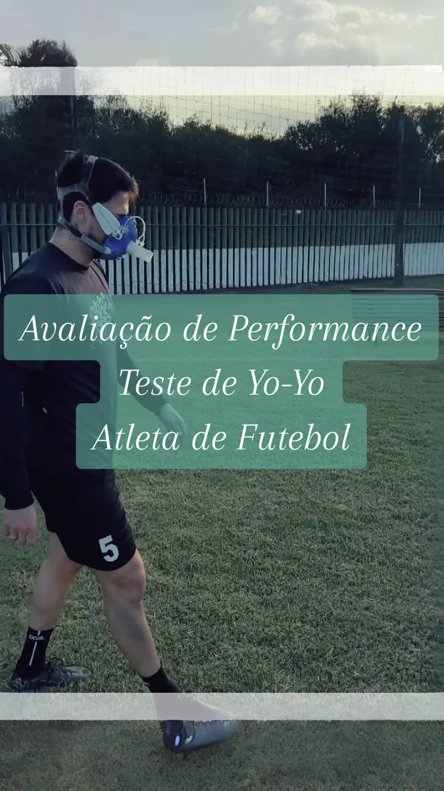
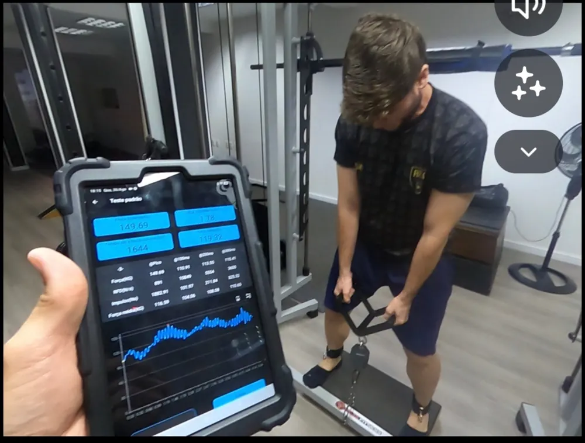
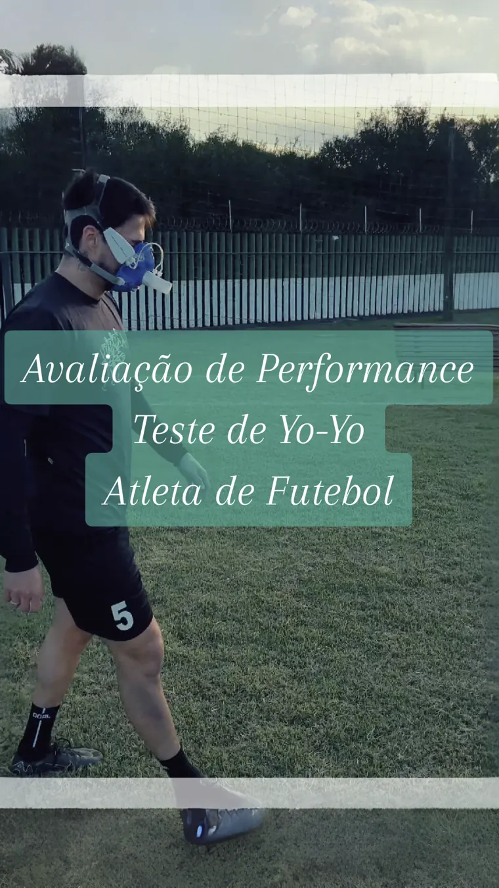

Avaliar
Coletar informações e medidas com protocolos consistentes.
O LB Performance conecta avaliação, interpretação, prescrição e monitoramento para transformar dados em decisões práticas no esporte.
Uma sequência de trabalho para identificar necessidades, construir intervenções e acompanhar a resposta de cada atleta.
Coletar informações e medidas com protocolos consistentes.
Entender resultados, contexto e limitações das medidas.
Definir prioridades e objetivos relevantes ao esporte.
Organizar exercícios, doses e progressões individualizadas.
Acompanhar carga, prontidão e respostas ao treinamento.
Comparar resultados e revisar decisões quando pertinente.
Relacionar a preparação física às demandas do esporte.
O Prof. Leandro Barbosa desenvolve o LB Performance a partir da integração entre avaliações físicas, treinamento esportivo e tecnologia aplicada ao acompanhamento de atletas.
O objetivo não é apenas produzir relatórios: é ensinar profissionais a interpretar informações e transformar resultados em decisões de treinamento.
O treinamento na academia é um acessório para resolver o problema do atleta no seu esporte.FILOSOFIA LB PERFORMANCE
Registros de avaliações de força e capacidade física em modalidades esportivas. As imagens são registros do trabalho, não promessas de resultado.
Coleta e interpretação das métricas para orientar o treinamento.

Testes aplicados às demandas físicas da modalidade.
Informações fisiológicas para apoiar decisões individualizadas.
Avaliações, treinamento e aplicação prática do método. Acesse o canal oficial e acompanhe os vídeos escolhidos para mostrar nosso trabalho.
Assista aos conteúdos e conheça as avaliações e a preparação física na prática. Os vídeos em destaque serão incorporados aqui após a escolha dos links.
Conhecer o canal LB Performance no YouTube ↗Na formação, cada medida deve responder a uma pergunta prática: o que priorizar, como prescrever e quando ajustar?
Força máxima, assimetrias, taxa de desenvolvimento de força e impulso interpretados dentro do contexto do esporte.
Capacidade de salto e resposta ao ciclo alongamento-encurtamento para orientar prioridades de treinamento.
Avaliação fisiológica, organização de zonas e acompanhamento das demandas específicas da modalidade.
Conheça exemplos de avaliações, testes e conteúdos técnicos no Instagram do Prof. Leandro Barbosa ↗.
Uma ferramenta para integrar o processo de avaliação e acompanhamento no cotidiano do treinador.
Na mentoria, o participante aprende a utilizar o aplicativo com um caso real. Acesso conforme condições do programa.
Registros de avaliações de performance em diferentes modalidades. A análise dos testes ajuda a construir decisões individuais, respeitando as demandas de cada esporte.

Testes de força e análise de dados para orientar a preparação física.

Protocolos de esforço realizados no contexto do esporte.
Coleta de informações para compreender demandas e orientar o treinamento.
Registros ilustrativos de procedimentos de avaliação. Resultados individuais não são divulgados.
A formação acompanha o raciocínio profissional completo, usando um caso real como fio condutor das decisões.
Após a confirmação da inscrição, receba as orientações para selecionar um atleta ou aluno, obter o consentimento e organizar as informações iniciais.
Conecte protocolos, limitações, resultados e necessidades do esporte à tomada de decisão.
Utilize o aplicativo LB Performance para organizar o plano, acompanhar respostas e discutir ajustes nos encontros ao vivo.
Construa um portfólio técnico do caso acompanhado, com justificativas para as escolhas realizadas.
Da avaliação à prescrição: desenvolva um processo que você poderá adaptar à sua realidade profissional.
Ver datas e investimento ↗Aprenda a aplicar o método na prática: do primeiro contato com o atleta à prescrição supervisionada e à análise da resposta ao treinamento. Formação ao vivo com atividades orientadas e portfólio técnico.
Quintas-feiras, das 21h às 22h (horário de Brasília)
Após a confirmação da inscrição, o participante recebe orientações de acesso ao aplicativo e preparação do caso real, com consentimento e cuidado com os dados do atleta. A reavaliação depende da pertinência técnica e do período de intervenção.
Um espaço permanente para formações que conectam avaliação, ciência e decisões de treinamento.
Aplicação supervisionada do método com caso real, ferramentas e acompanhamento ao vivo.
Conhecer a mentoria ↗Novas formações práticas em avaliação, prescrição, monitoramento e performance esportiva serão apresentadas aqui quando estiverem disponíveis.
Acompanhe os anúncios no Instagram ↗Sim. A imersão será presencial em Londrina–PR, com participação simultânea ao vivo por link para profissionais de outras localidades.
A proposta prática utiliza um caso real. Após a inscrição, você receberá orientações para selecionar o participante, obter as autorizações necessárias e preparar os dados iniciais.
Sim. O LB Performance faz parte das atividades de cadastro, avaliação, prescrição e monitoramento, com acesso durante o período da mentoria.
Não. O foco é desenvolver competência de avaliação e tomada de decisão. Adaptações físicas dependem do atleta, do treinamento e do período disponível.
Ao clicar em “Garantir minha vaga”, você será encaminhado ao checkout do Mercado Pago para visualizar as formas de pagamento disponíveis.
Turma fundadora com seis vagas. Inscrições pelo Mercado Pago.
QUERO PARTICIPAR ↗